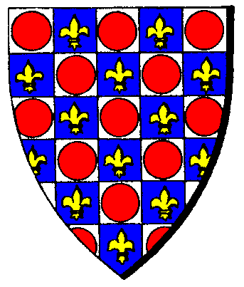

| Übersicht,
Anschläge und Stammtisch (RPG) |
|
Auf Leben und Tod
|
| Anat Elemmiire (RIP) |
*Ein junges Mädchen kommt an die Anschlagbretter und heftet etwas daran.*
Nun ist es soweit. Meine Mutter ist wieder da und hat mich kontaktiert. In 6 Tagen werden wir aufeinandertreffen. Alleine ohne Unterstützung anderer.
Dieser Kampf wird alles beseitigen, vor allem wird es eines Beenden.
Entweder meine Mutter oder ich werden zu Gaya gehen und nicht wiederkommen.
An alle die ich liebe und die mir etwas bedeuten, ihr werdet mir fehlen.
Doch seid nicht auf Rache aus. Es musste so kommen.
Die Regel zu dem Kampf sind einfach. Nur Nahkampf, kein Fernkampf. Es wird solange gekämpft bis einer in das Reich Gaya´s übergeht. Unterstützungen sind untersagt und auch das verwenden von Heiltränken.
Der Ort wird nur meiner Mutter und mir bekannt sein, damit es keinen gibt, dem anderen helfen kann.
*unterzeichnet ist das Schreiben mit*
Anat Elemmiire
Weise Anat Elemmiire,
Vorsteherin von Eschatiôtês
Zur 24. Stunde am 61.Dunkelfrost im Jahre 446 |
28.06.11 11:30
 |
|
| Chevonne Siobhan (RIP) |
Kann Euch denn niemand davon überzeugen, daraus einen Wettstreit zu machen? Muss denn unbedingt eine von Euch auf der Strecke bleiben?
Freifrau Chevonne Siobhan,
Vorsteherin von Sigil,
Anführerin der glorreichen Nation "Orden der Sinne"
Zur 7. Stunde am 62.Dunkelfrost im Jahre 446 |
28.06.11 13:01
|
|
| Nero (RIP) |
*Eine Frau mit Waldgrünem Umhang kommt auf dem Platz. Ihr Weißes Haar verschmilzt mit dem Weiß des Schnee´s. Ihre obsidianfarbende Haut hebt sich von dem weiß ab und ihre smaragdfarbenen Augen schauen Chevonne an*
Kind sei still. Geh zu deinen Lehrerinnen und lass dir erklären warum nur ein Wettstreit nicht möglich ist.
Das muss bis zum Ende ausgetragen werden.
Landuriel Elemmiire
Zur 9. Stunde am 62.Dunkelfrost im Jahre 446 |
28.06.11 13:34
|
|
| Rabe (RIP) |
~Nachdem sie gelesen hatte was der Andrang bei diesem Anschlag zu bedeuten hatte, hängte sie ebenfalls einen Zettel darunter~
Liebe Spielleute und Abenteurer,
heute ist euer Glückstag. In wenigen Tagen wird es ein Duell auf Leben und Tod geben und was wäre dies für eine Welt, wenn darauf nicht Wetten angenommen würden?
Die Quoten stehen 2:1 für Landuriel Elemmiire, 50:1 für Anat Elemmiire. Ein Unentschieden, also das beide sterben wird mit einer Quote von 1000:1 datiert.
Ich bitte um die Einsätze.
Gez.
Rabe
Zur 15. Stunde am 62.Dunkelfrost im Jahre 446 |
28.06.11 15:00
|
|
Garrosh Blutsäufer
 |
Kind zieh dir erstmal was an ... sonst rafft dich der schnupfen noch vor deiner mutter hin ...
Garrosh Blutsäufer
Zur 17. Stunde am 62.Dunkelfrost im Jahre 446 |
28.06.11 15:25
|
|
Garrosh Blutsäufer
|
und kiiiiind ... geh erstmal zur schule ... wat du da am schreiben sein tust ist ja sowas von am grauenhaft klingen ... dat is ja wie als wenn der fiedler die fiedel rücklings zupft ... oder zupfen tut ...
Garrosh Blutsäufer
Zur 17. Stunde am 62.Dunkelfrost im Jahre 446 |
28.06.11 15:30
|
|
Icke wieder
|
Ich bin entzückt! Darf ich den mitnehmen und behalten?
Graf Ottor Waefre,
Vorsteher von Oneiros
Zur 19. Stunde am 62.Dunkelfrost im Jahre 446 |
28.06.11 15:56
|
|
Abdiel der Gehörnte
 |
Na ob der sich mit Deinem Wichtel verträgt? *Ottor ein kreischendes Lumpenbündel zuwirft*
Am Schlimmsten ist eigentlich, dass dieser Thallian nun doch noch seinen Wunsch erfüllt bekommt. Allein das zeigt doch schon die Lächerlichkeit dieses ganzen Unterfangens. Wäre es nicht besser, man würde den Beiden die Waffen abnehmen und durch je einen Knüppel ersetzen? Dann könnten die sich doch gleich praktischerweise gegenseitig Verstand einbleuen...
Abdiel der Gehörnte
Zur 2. Stunde am 63.Dunkelfrost im Jahre 446 |
28.06.11 17:27
|
|
| Anat Elemmiire (RIP) |
Werter Garrosh,
lernt ihr ersteinmal für euch zu stehen.
Denn einen Orc, wlcher unter dem Wappen der Nachtelfen läuft,kann ich nicht ernst nehmen.
Außerdem ist es meine Sache was ich trage, solange ich nicht in einem Spiegel sehen muss wie hässliches Grün meine Haut bedeckt, solltet ihr Eure *sie räuspert sich* Bananen querfressende Schnautze halten.
*Das junge Mädchen ist sichtlich angespannt und gereizt. Die Bemerkung dieses Abdiel´s ignorierte sie*
Weise Anat Elemmiire,
Vorsteherin von Eschatiôtês
Zur 3. Stunde am 63.Dunkelfrost im Jahre 446 |
28.06.11 17:47
|
|
| Parrakus (RIP) |
*aufmerksam verfolgt er das Geschehen und schüttelt fast unmerklich den Kopf*
Anat, Euch durfte ich nur kurz in meiner alten Stadt Drakengard kennenlernen, dennoch machtet Ihr mir einen vernünftigen Eindruck, und Landuriel, Dich kenne ich nun schon fast so lange wie ich auf Scherben wandel.
*erneut schüttelt er den Kopf leicht*
Ihr beide werdet Eure Gründe haben, dennoch würde ich versuchen einen anderen Weg oder eine andere Lösung zu finden...
Sir Parrakus,
Anführer der glorreichen Nation "Sleipnirs vergessene Reiter",
Verlobter der reizenden Nell v.Amrita,
Feind der urvanischen Willkür
Zur 9. Stunde am 63.Dunkelfrost im Jahre 446 |
28.06.11 19:13
|
|
Icke wieder
|
Argh,... *das kreischende Lumpenbündel unauffällig mit hochrotem Kopf in seine Tasche stopft und den Lärm schief aber fröhlich pfeifend zu überspielen versucht* Hahaha ja dumme Sache das mit Euch! *es zappelt wie wild unter seinem Arm, dass er sich selbst einen Kinnhaken versetzt* Solche Probleme müsste man haben,... hahaha,... argh... *davontrollt*
Graf Ottor Waefre,
Vorsteher von Oneiros
Zur 11. Stunde am 63.Dunkelfrost im Jahre 446 |
28.06.11 19:36
|
|
| Chevonne Siobhan (RIP) |
Hmmmmmmm...*ein gemeines Grinsen entsteht auf Chevonnes Gesicht.*
Wenn ich nun 10.000.000 auf Anat setze, gehörst Du dann mir, wenn ich gewinne und Du nicht zahlen kannst? Und wenn ich gar auf ein Unentschieden setze, gehören dann auch Deine Nachkommen mir, wenn ich gewinne und Du nicht zahlen kannst?
Freifrau Chevonne Siobhan,
Vorsteherin von Sigil,
Anführerin der glorreichen Nation "Orden der Sinne"
Zur 15. Stunde am 63.Dunkelfrost im Jahre 446 |
28.06.11 20:41
|
|
| Lesaonar AgDuskryn (RIP) |
~Neugierig zu dem Andrang schlendert und sich neben Chevonne stellt.~
Was willst du denn mit Ihr, so ein dürres Gerippe, kaum was an und auch sonst wohl keine gute Qualität.
Nimm lieber den Grafen der ist gut situiert, scheint was im Köpfen zu haben und dürfte weniger Scherereien machen!
10.000 GS auf Anat!
Ritter Lesaonar AgDuskryn,
Vorsteher von Cair Paravel
Zur 16. Stunde am 63.Dunkelfrost im Jahre 446 |
28.06.11 20:51
|
|
| Rabe (RIP) |
Wenn die Gewinne werden natürlich nur ausgezahlt, wenn die Einnahmen die Einsätze decken. Das versteht sich von selbst, freches Biest.
Gez.
Rabe
Zur 16. Stunde am 63.Dunkelfrost im Jahre 446 |
28.06.11 20:52
|
|
| Chevonne Siobhan (RIP) |
Also, wenn der Graf für Rabe bürgt, würde ich glatt meinen Einsatz machen.
Freifrau Chevonne Siobhan,
Vorsteherin von Sigil,
Anführerin der glorreichen Nation "Orden der Sinne"
Zur 17. Stunde am 63.Dunkelfrost im Jahre 446 |
28.06.11 21:08
|
|
Icke wieder
|
Äh,...
*trinkt einen Schluck warmen Ruhm, guckt dreimal aber sieht keinen anderen Grafen daher fühlt er sich genötigt zu antworten*
... ich bürge nicht für eine Unterweltverirrte. Was würde das denn für ein Licht auf mich werfen? Als wenn ich mich mit verwirrten Seelen abgeben würde...
*Wie auf Kommando guckt ein grüner Kopf aus seinem Ärmel, den er aber geflissentlich ignoriert*
Da boxe ich lieber eine Runde Schatten mit einem D-Elfen...
Graf Ottor Waefre,
Vorsteher von Oneiros
Zur 18. Stunde am 63.Dunkelfrost im Jahre 446 |
28.06.11 21:24
|
|
| Chevonne Siobhan (RIP) |
Das hätte mich, ehrlich gesagt, auch verwundert, werter Graf. Aber es hätte ja sein können, dass mir irgendetwas vom Gespräch hier abhanden gekommen sein könnte.
Huch, das war jetzt aber viel Hättewürdekönnte.
Freifrau Chevonne Siobhan,
Vorsteherin von Sigil,
Anführerin der glorreichen Nation "Orden der Sinne"
Zur 21. Stunde am 63.Dunkelfrost im Jahre 446 |
28.06.11 22:06
|
|
Abdiel der Gehörnte
|
Apropos verwirrte Seelen: Will denn niemand meinen Vorschlag aufgreifen? Wenn dennoch keine Lösung, sprich Verstand, den Knüppeln entspringen würde, könnte ich mir auch durchaus eine Runde "Sterben auf Probe" vorstellen. Dies hätte den Vorteil, dass man erst einmal schaut, ob denn dieses Duell überhaupt den gewünschten Effekt hat und sich die Konfrontation auf Leben und Tod nicht doch noch als blöde Idee erweist.
Ich würde sogar für meinen Lehnsherrn bürgen, in dieser Angelegenheit den Posten des Unparteiischen zu übernehmen...
Abdiel der Gehörnte
Zur 5. Stunde am 64.Dunkelfrost im Jahre 446 |
28.06.11 23:50
|
|
Arthwr Dyddplentyn
  |
Werte Anat,
i nix kenn di oda Garrosh,er aba schein selbe grune Blut in Ader zu habe wi i.
Du liba hor auf Abdiel:gege eigen Mutta kampfen nix gut,schon gar nix bis tot!
Un grun is nix hasslich,du frag mei Menschweib,wenn Spigel zeig grun das genauso schon wi ander Farbe...
Arthwr Dyddplentyn,
Ehemann der reizenden Chihiro Takeshi,
Kuchemampf- un Birtrinkgroßmeista
Zur 14. Stunde am 64.Dunkelfrost im Jahre 446 |
29.06.11 1:57
|
|
| Anat Elemmiire (RIP) |
Werter >Arthwr,
ich kenne Euch und eure Frau. Ich war auf eurer Hochzeit.
Wenn ihr die Worte von Garrosh gelesen hättet dann wüsstet ihr auch wie meine Worte gemeint waren. Und was die Vorschläge von dem werter HErrn Abdiel angeht, er sollte sich mal eine Drow zulegen, dann wüsste er warum ich auf seine hirnrissigen Vorschläge nicht eingegangen bin.
Auch Euch sag ich er gerne nochmal werter Arthwr, Meine Mutter und ich müssen es so susdiskutieren. So ist es brauch und so werde ich nur Frei sein und ohne Angst weiterleben können.
Weise Anat Elemmiire,
Vorsteherin von Eschatiôtês
Zur 17. Stunde am 64.Dunkelfrost im Jahre 446 |
29.06.11 2:42
|
|
Icke wieder
|
Dafür müsste sich aber eine freiwillig opfern,... sprich zur Verfügung stellen. Da fällt mir ein... *er stellt sich neben Lesaonar und lächelt als könne er keinem Wichtel etwas antun* ...wir sollten uns da noch einmal dringend unterhalten.
Wertes *er schaut zu Anat und überlegt ob ihm der Name noch einfällt aber dann winkt er ab* wertes Maderl mit dem Streifen über der Brust, Ihr scheint ein Kind zu sein, welches die Aufmerksamkeit anderer braucht und offensichtlich hat someone nicht ausgereicht. Darum wünsche ich Euch einfach viel Erfolg.
*Er zieht seinen Novizen beiseite* Heute bringe ich dir eine meiner Überlebensweisheiten bei: Stelle dich nie zwischen zwei streitende Weiber.
Graf Ottor Waefre,
Vorsteher von Oneiros
Zur 19. Stunde am 65.Dunkelfrost im Jahre 446 |
29.06.11 8:40
|
|
Abdiel der Gehörnte
|
*Schaut interessiert, aber mit gebührendem Abstand zu, wie Ottor versucht, Misha gute Ratschläge zu geben. Wendet sich dann kopfschüttelnd von der Szene ab und dem Anschlag wieder zu.*
Nun Anat,
ich hatte durchaus schon des Öfteren das Vergnügen einige Deiner Stammesgenossen kennenzulernen. Natürlich nie so intensiv, um eine durch und durch fundierte Meinung zu erhalten. Aber wenn ich Eines gelernt habe, dann das man niemals etwas MUSS! Aber das wirst Du noch früh genug feststellen, solltest Du je alt genug werden. Bei der aktuellen Einstellung ist das natürlich fraglich...
*mit einem amüsierten Seitenblick auf eine augenrollend, weitere Ratschläge ertragende Misha weiterzieht*
Abdiel der Gehörnte
Zur 14. Stunde am 67.Dunkelfrost im Jahre 446 |
29.06.11 18:40
|
|
| Lesaonar AgDuskryn (RIP) |
Anat aus dem Hause Elemmiire, gegen eure Diskussionsart ist nichts ein zu wenden, zumindest nicht von meiner Seite. Jedoch über euer betragen könntet ihr noch einmal nachdenken.
Wenn ihr euch schon mit eurer Mutter bis zum Tod duellieren wollt, macht das wie es sich für Drow gehört, alleine!
Dieses öffentliche zur Schau stellen, bereitet deinem Haus Schande, benimm dich, wie es sich gehört und Stirb leise.
Solltest du allen Chancen zum Trotz doch gewinnen...ach was rede ich da.
~zu Ottor sieht~ Opfern klingt gut, ich kannte da mal eine Elfe, mit ihrem Blut schrieb ich ein Gedicht, auf ihre wunderbar weiße Haut. ~dann von Chevonne zu Ottor und wieder zurück schaut~
Ihr beide würdet übrigens ein Traumhaftes paar abgeben, außerdem vielleicht springt da für mich dann auch etwas raus...
Ritter Lesaonar AgDuskryn,
Vorsteher von Cair Paravel
Zur 19. Stunde am 67.Dunkelfrost im Jahre 446 |
29.06.11 19:59
|
|
| Deirdre B. McMulenberc (RIP) |
Wer hätte gedacht, dass eine schwarzhaut recht haben könnte? *Lesanoar interessiert nachblickt*
Aber immerhin wird einem mit einer solchen Schmierenkomödie nicht langweilig.
Freifrau Lis Anjarie,
Vorsteherin von Gondtyl,
Biest von Lunaé
Zur 20. Stunde am 67.Dunkelfrost im Jahre 446 |
29.06.11 20:07
|
|
Icke wieder
|
*Er wird blass und seine Zunge schwillt an, ihm wächst ein Pickel am Hals und das Atmen fällt ihm schwer.*
Drows sind fies und gemein, das schreib ich auch in meine Überlebensweisheiten:
Frauen sind schlechter Umgang und Drows bringen den Unter.
Graf Ottor Waefre,
Vorsteher von Oneiros
Zur 24. Stunde am 67.Dunkelfrost im Jahre 446 |
29.06.11 21:03
|
|
| Nero (RIP) |
*Landuriel taucht erneut auf, doch diesesmal offen und stellt sich hinter den Drow.*
Lasst das Kind. Da kommt zu sehr der Vater durch. Ich amüsiere mich da nur.
Tangis´ ka Usstan inbal natha endar kaas ghil, vel´uss zhaun uns´aa orn ser wun zha´linth a natha endar qu´ellar. P´wal ussta ilharn zhahus natha dalharuk d´lil qu´ellar Do´Urden. Ussta dalninuk dro´us xuil nindol kaas lu´ zhahus elggen wun ukt v´dri. Plynnen bwael kyon d´ dos. Tangis´ ka l´ ligrr ´udtila naut lor saph ol. Il loren saph il zhah mzild Ilythiiri
*spricht sie dann und geht amüsiert wieder weg. Auf dem Weg,weg vom Marktplatz, spricht sie nochmals zu dem Drow*
Ka fol nibeless ulu uns´aa. Udos inbalus jivvin xuil sreen´aur.
Landuriel Elemmiire
Zur 2. Stunde am 70.Dunkelfrost im Jahre 446 |
30.06.11 8:47
|
|
Icke wieder
|
Warum musste das SO enden,... jetzt ist die Frau ein Mann und die Götter wurden um eine Seele betrogen,... ich weiß ehrlich nicht was schlimmer ist, dafür hat ein geprellter Verlobter nun seine Freiheit zurück!
Graf Ottor Waefre,
Vorsteher von Oneiros
Zur 13. Stunde am 83.Dunkelfrost im Jahre 446 |
03.07.11 12:01
|
|
| Anat Elemmiire (RIP) |
*Ein Bote kommt auf den Marktplatz und verließt ein Schreiben*
Werte Leute vernehmnt den Ausgang.
Die werte Anat Elemmiire hat im fairen Zweikampf
gegen ihre Mutter Landuriel Elemmiire gewonnen.
Landuriel ging in das Reich Gaia´s und wird nie wieder zurück kommen.
Die Siegerin Anat hat sich zurückgezogen, welches auch mit ihren schweren Wunden zu tun hat, welche sie davon getragen hat.
Möge Gaia der Seele Landuriel´s gnädig sein und sie bei sich behalten.
*der Bote schaut sich um und hängt dann das schreiben auf.*
Weise Anat Elemmiire,
Vorsteherin von Eschatiôtês
Zur 16. Stunde am 83.Dunkelfrost im Jahre 446 |
03.07.11 12:54
|
|
Jazariel
|
Die Last der Erbsünde lastet schwer auf den Schultern ein jeder Drow.
Ich bezweifle nicht, dass Gaia ihre Seele bei sich behalten wird. Nur ob es die Obhut sein wird, die Ihr euch vorstellt Wage ich zu bezweifeln.
Ehrenvoller, faierer Zweikampf hin oder her. Das Blut der Dorws ist schwer von Schmerzen vergangener Schuld...
Jazariel |
03.07.11 16:06
|
|
Übersicht,
Anschläge und Stammtisch (RPG)
|